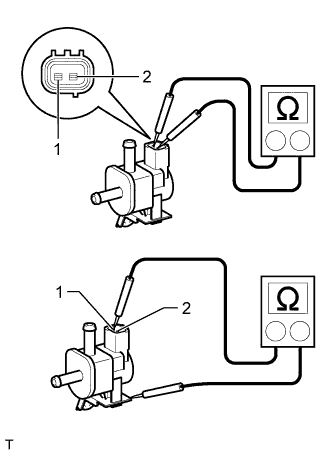
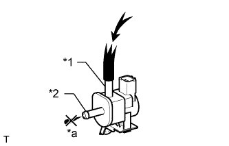
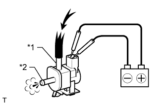

PURGE VALVE > INSPECTION |
| 1. INSPECT PURGE VSV |
|  |
Measure the resistance according to the value(s) in the table below.
| Tester Connection | Condition | Specified Condition |
| 1 - 2 | 20°C (68°F) | 23 to 26 Ω |
| 1 - Body ground | Always | 10 MΩ or higher |
| 2 - Body ground |
Check the operation of the purge VSV.
|  |
Check that air does not flow from port E to port F.
| *1 | Port E |
| *2 | Port F |
| *a | Does not flow |
 | Air pressure |
|  |
Apply battery voltage to the connector and check the VSV operation.
| Measurement Condition | Specified Condition |
| Battery positive (+) → terminal 1 Battery negative (-) → terminal 2 | Air flows from port E to port F |
| *1 | Port E |
| *2 | Port F |
| Air pressure |